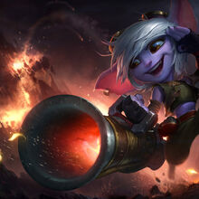

Ciudad de Bandle
No se sabe con exactitud donde esta la mitica Ciudad de Bandle, ya que este siempre a sido un misterioso lugar al que solo los Yordles, unos seres antropomorficos muy adorables, pueden acceder
Algunos campeones provenientes de esta region son:
|  |
|---|